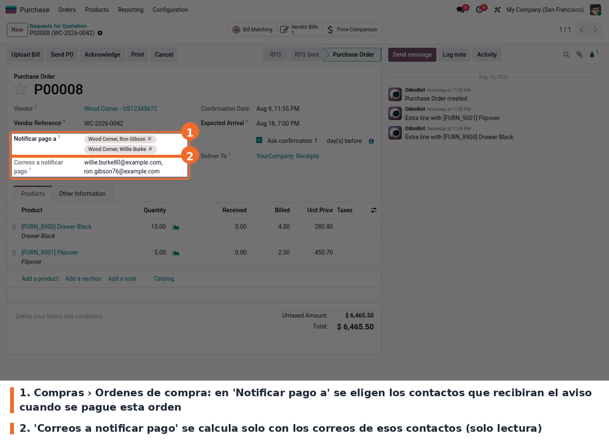
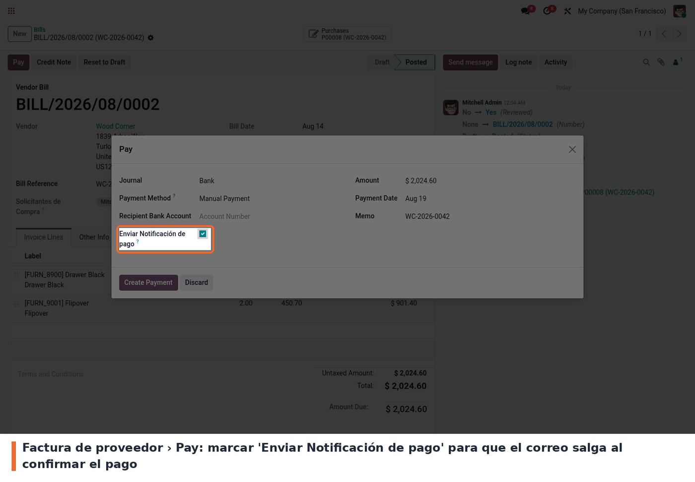
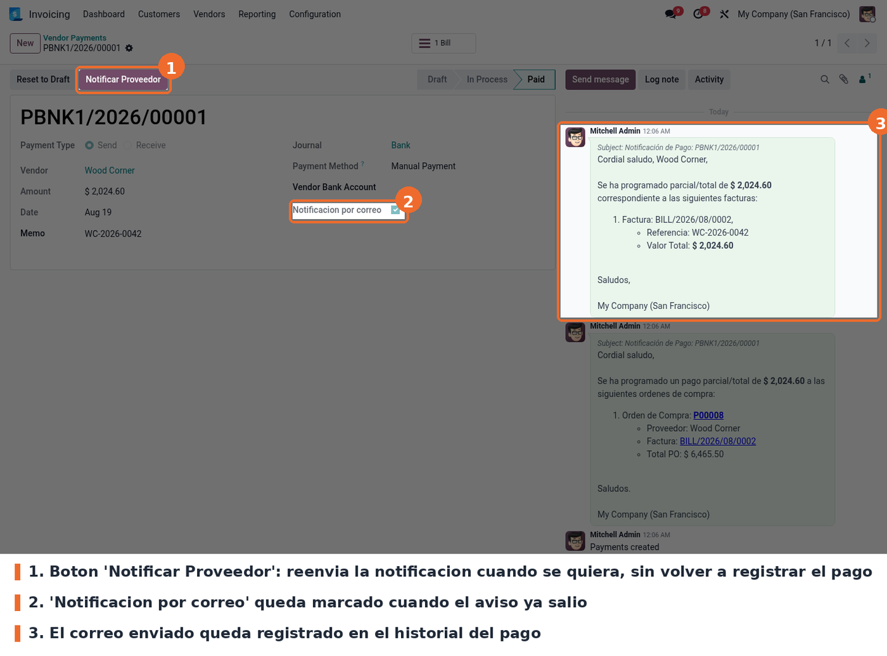
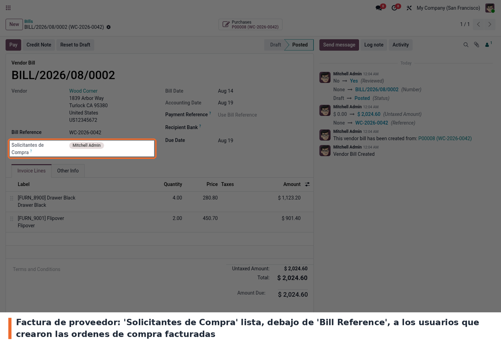

Avisa por correo al proveedor y a los solicitantes de compra cada vez que se registra un pago, y deja a la vista quién pidió lo que se está pagando. Al confirmar el pago de una factura de proveedor envía un correo al proveedor con el detalle de las facturas cubiertas, y otro a los contactos que se hayan indicado en la orden de compra relacionada.
Para eso agrega tres cosas: el campo Notificar pago a (notify_requester_ids) en la orden de
compra, con el listado de correos calculado al lado; el campo Solicitantes de Compra
(buyers_invoice_ids) en la factura de proveedor, que muestra los usuarios que crearon las órdenes
de compra que se están facturando; y la trazabilidad del aviso en el pago, con la marca
Notificación por correo —visible también como columna en la lista de pagos a proveedor— y un
botón Notificar Proveedor para reenviarlo. El módulo está marcado como auto_install: se instala
solo cuando ya están instalados account, purchase y contacts.
El módulo no agrega ninguna opción en Ajustes: se configura orden por orden. En Compras › Órdenes › Órdenes de compra, debajo de la referencia del proveedor, se indican los contactos que deben enterarse cuando esa compra se pague.

Campo Notificar pago a en la orden de compra
ROADMAP antes de registrar el primer pago.En la factura de proveedor se pulsa Pay y en el asistente aparece la casilla Enviar Notificación de pago. Con la casilla marcada, al pulsar Create Payment el correo sale solo. La casilla se oculta en los cobros de cliente: solo aplica a pagos salientes.

Casilla Enviar Notificación de pago en el asistente
El pago creado muestra Notificación por correo marcado y los correos enviados en su historial: uno al proveedor con el detalle de las facturas y otro a los contactos de la orden de compra. El botón Notificar Proveedor permite reenviar el aviso en cualquier momento.

Pago con botón Notificar Proveedor y correos enviados
En la factura de proveedor, justo debajo de Bill Reference, el campo Solicitantes de Compra lista los usuarios responsables de las órdenes de compra facturadas. Es de solo lectura y se calcula solo; si la factura no viene de una orden de compra, el campo no se muestra.

Campo Solicitantes de Compra en la factura de proveedor
static/description/icon.png. En la ficha de Apps se ve el cubo genérico de Odoo. Hace
falta arte, no se inventa.acc_number directamente. Quien lo necesite tiene
que rehacerlas contra el widget de cuentas bancarias de 19.